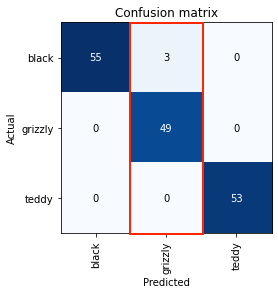
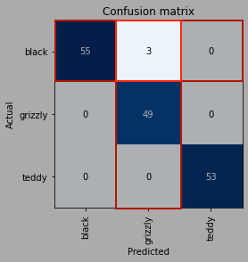
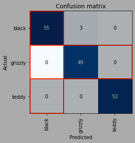
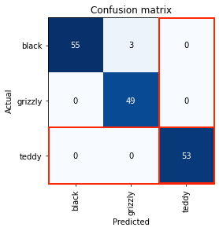
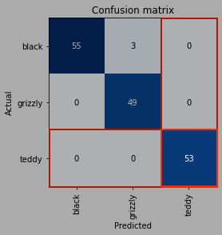

A No Nonsense Guide to Reading a Confusion Matrix
Are you confused yet?
This article was updated on Thursday, 10 November 2022.

Confusion matrices help model designers view what mistakes a model has made.
In this post, I’ll be telling you how to easily read such matrices.
Jump to Section 2 for an ultra concise rundown.
Ready? Here we go.
Case 1: Introduction

Ignore the “Actual” and “Predicted” labels for now.
Let’s compare grizzly bears to black bears.
All comparisons begin at the bottom, with the columns.
First, highlight the grizzly bear column.

Next, highlight the black bear row.
Now find the common entry in the highlighted column and row.

This common entry is our required information.
All entries in the diagonal going from the top left to the bottom right (blue) are correct classifications. All other entries are incorrect classifications.
Our common entry does not lie in the main diagonal. Therefore, we are looking at incorrect classifications.
We have compared grizzly bears to black bears. Therefore, from this deduction, three grizzly bears have been incorrectly classified as black bears.
There is a difference between comparing grizzly bears to black bears and black bears to grizzly bears.
Comparing grizzly bears to black bears means, “How many grizzly bears were misclassified as black bears?”
Comparing black bears to grizzly bears means, “How many black bears were misclassified as grizzly bears?”
Case 2: Ultra Concise
Let’s compare black bears to grizzly bears.
Highlight the black bear column.

Highlight the grizzly bear row.
Highlight the common entry.

Zero black bears were misclassified as grizzly bears.
Case 3: Correct Classifications
Let’s see how many teddy bears were correctly classified. We are essentially comparing teddy bears to teddy bears.
Highlight the teddy bear column.
Highlight the teddy bear row.

Highlight the common entry.

Fifty three teddy bears were correctly classified as teddy bears.
Exercise: Do It Yourself
Below is a confusion matrix of a car classifier that classifies cars into their brand.

You learn by doing!
- How many Lamborghinis were correctly classified?
- How many Jaguars were incorrectly classified?
- How many Chevrolets were misclassified as Fords?
- How many Fords were misclassified as Chevrolets?
- Which two car brands did the model have the most trouble differentiating between?
If you have any comments, questions, suggestions, feedback, criticisms, or corrections, please do post them down in the comment section below!